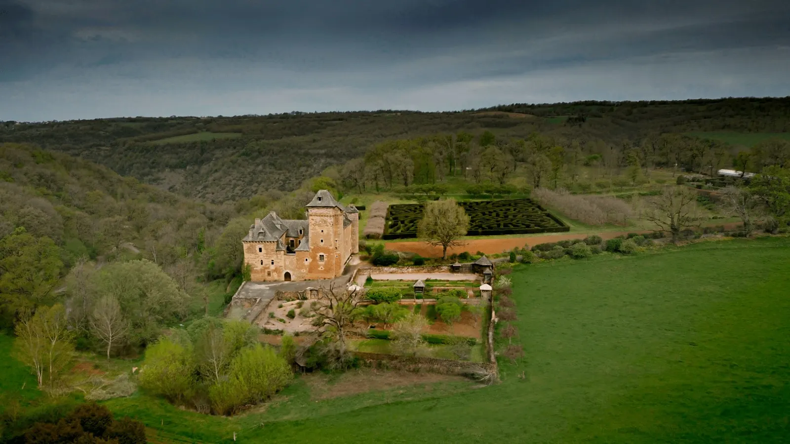
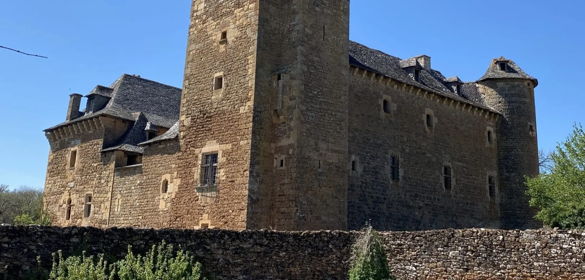
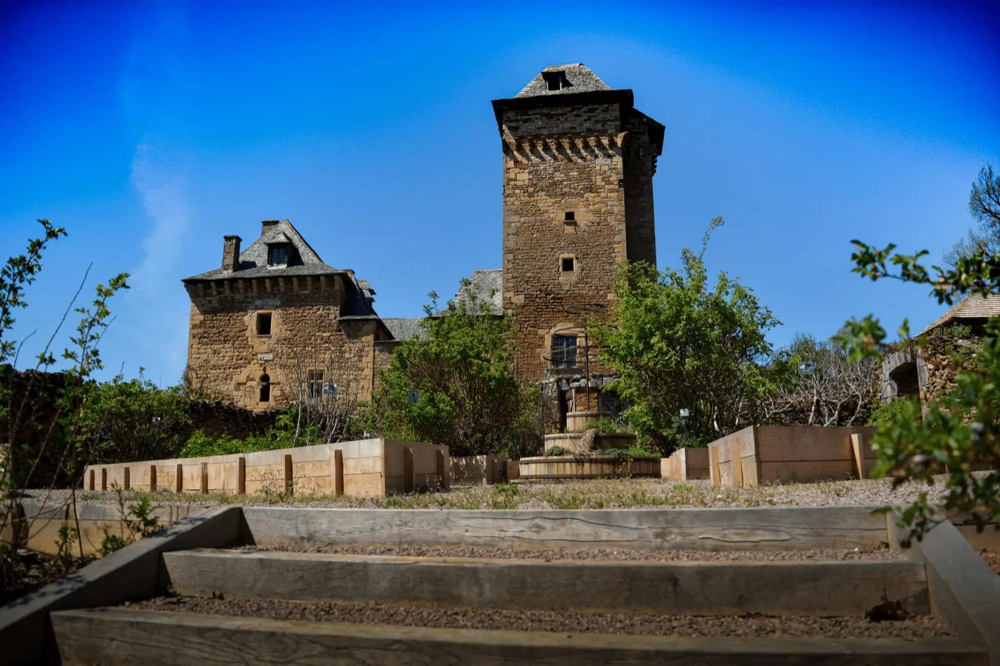
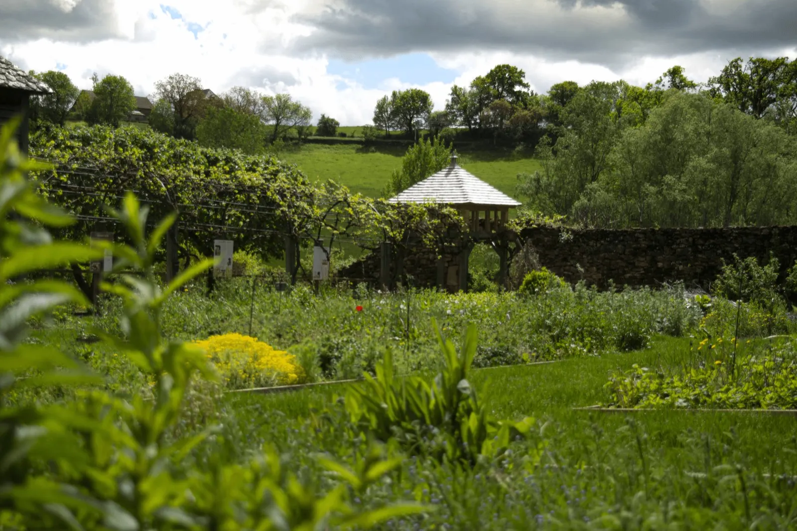
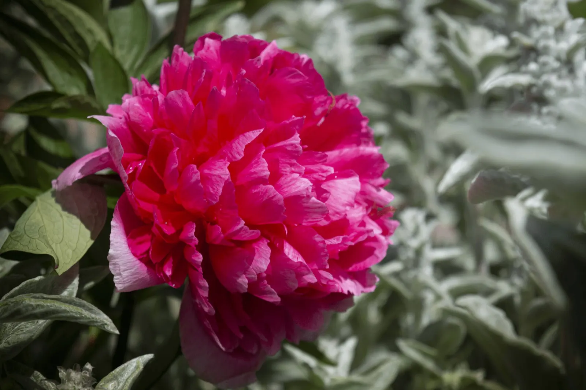
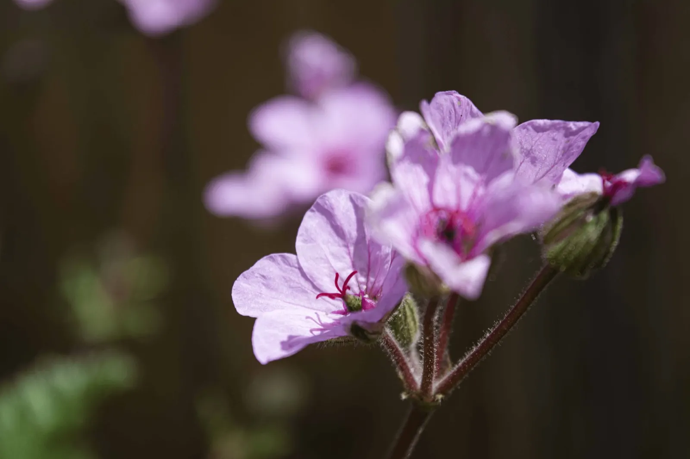
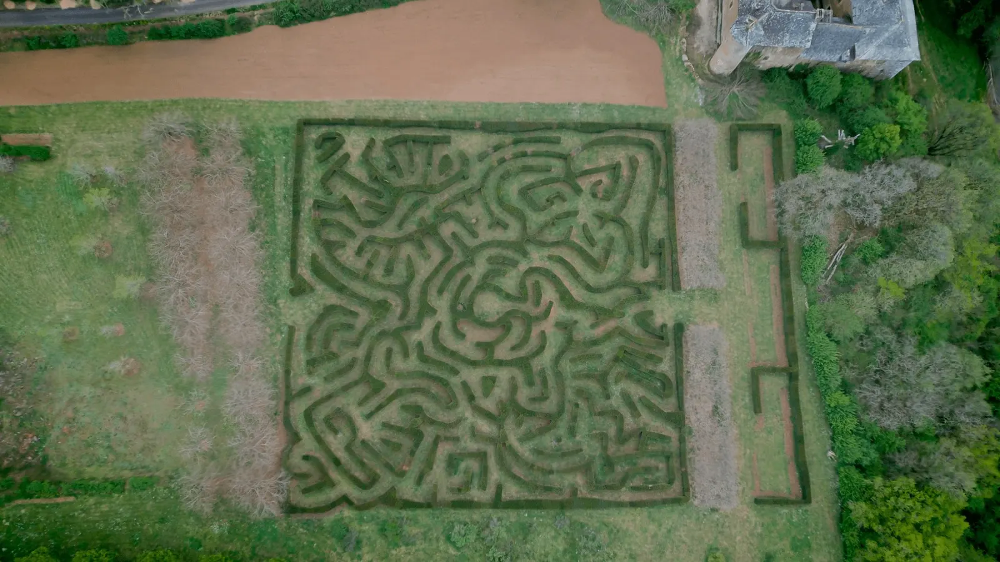
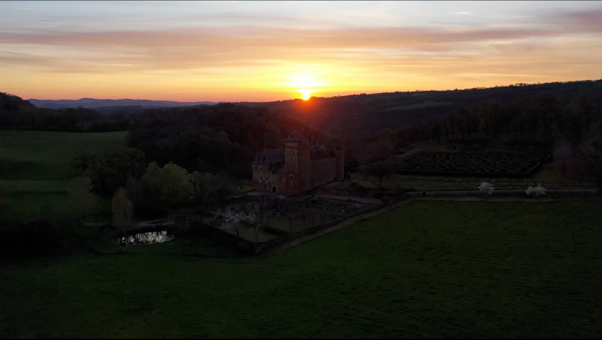
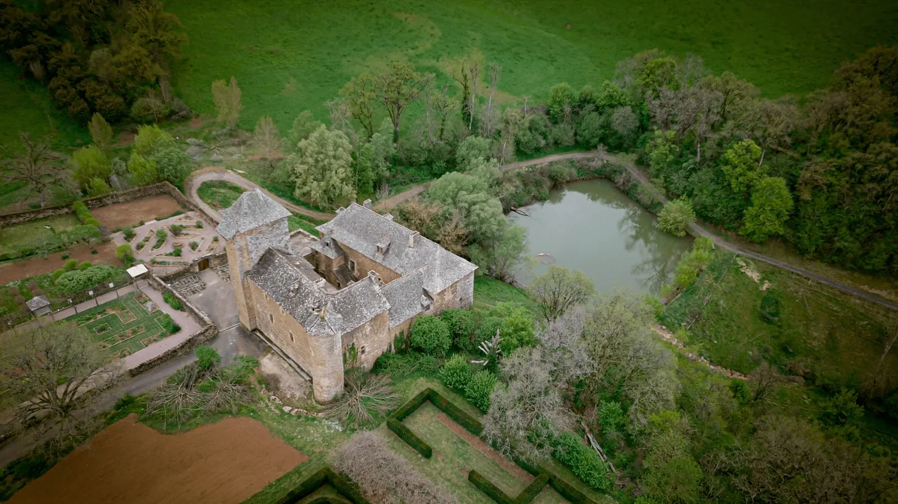

Depuis trente et une générationsAux portes du vignoble de Marcillac, au cœur de l'Aveyron
Le Château du Colombier
Paul et Edmond de La Panouse ouvrent leur domaine : jardin médiéval, labyrinthe, pêche au pied du château et escape game Auto-Psy.
Paul et Edmond de La Panouse ouvrent leur domaine : jardin médiéval, labyrinthe, pêche au pied du château et escape game Auto-Psy.
- 31 générationsde la famille de La Panouse au Colombier
- 350 espècesvégétales dans le jardin médiéval rénové
- Escape gameune heure, de 2 à 8 joueurs, dès 8 ans
- Mondalazacà 10 minutes de Marcillac-Vallon, 20 de Rodez
L'histoire du Château du Colombier
Aux portes du vignoble millénaire de Marcillac, et proche du village de Conques, le Château du Colombier participe à la richesse patrimoniale du Vallon de Marcillac. Il appartient à la famille de La Panouse depuis trente et une générations.
Édifice militaire ou château de complaisance, le Colombier a très souvent été modifié au cours des siècles. Aujourd'hui, Paul et Edmond de La Panouse ouvrent leurs domaines au public, pour faire partager leur histoire et transmettre le savoir de coutumes ancestrales.
Il porte ce nom grâce à ses deux colombiers, qui servaient à l'élevage des pigeons de l'époque.


Un jardin médiéval pour une journée en famille
Un espace bucolique aux 350 espèces végétales, qui invite à voyager dans le temps et à se ressourcer dans la nature. On y pique-nique, on profite des coins d'ombre et de la buvette, et les enfants déambulent dans la zone de jeux.

Le jardin médiéval rénové

- Le jeu de piste dans le labyrinthe
- La buvette et les espaces ombragés
- La zone de jeux : tourniquets, échiquier et jeu de l'oie géants
- Le pique-nique sur les pelouses, devant le château

Escape game Auto-Psy
Une aventure d'une heure au Château du Colombier, à vivre entre amis ou en famille.
- DuréeUne heure
- JoueursDe 2 à 8, à partir de 8 ans
- HorairesDe 10 h à 20 h
- RéservationSur réservation, ou sur place selon les disponibilités

Réserver une partie
Par téléphone ou par mail : dites le jour, l'heure et le nombre de joueurs.

L'étang, en contrebas du châteauUne journée de pêche au bord de l'eau
Passez une journée au bord de l'eau en contrebas du château, entre amis ou en famille. On pêche selon le principe du no kill : les carpes et les perches sont remises à l'eau.
Préparer ma visite
Quelques infos pour gagner du temps. Des conditions climatiques particulières peuvent amener à fermer certaines parties du château et des jardins, pour des raisons de sécurité.
Tarifs
- Adulte plus de 12 ans7 €
- Enfant de 3 à 12 ans5 €
- Moins de 3 ansgratuit
- Groupe à partir de 10 personnes5 €
- Tarif PMR5 €
- Carte pêche entrée incluse10 €
Horaires
Pendant la saison d'ouverture, les jardins et l'espace pique-nique ouvrent du mercredi au dimanche, de 14 h à 18 h (fermeture des portes à 17 h 30). Le site est fermé le lundi et le mardi.
Les dates d'ouverture se confirment au 05 65 74 99 79.
Venir en voiture
- Rodez, à 20 minutes par la D901
- Marcillac-Vallon, à 10 minutes par la D227
- Salles-la-Source, à 15 minutes par la D27
Les animaux
Aucun animal n'est accepté dans l'enceinte du château ni dans les jardins médiévaux, sauf pour les personnes en situation de handicap.
Nous contacter
Une question sur la visite, la pêche ou l'escape game : le plus simple est d'appeler, ou d'écrire.
- Adresse
- Château du Colombier
Mondalazac, 12330 Salles-la-Source - Téléphone
- 05 65 74 99 79